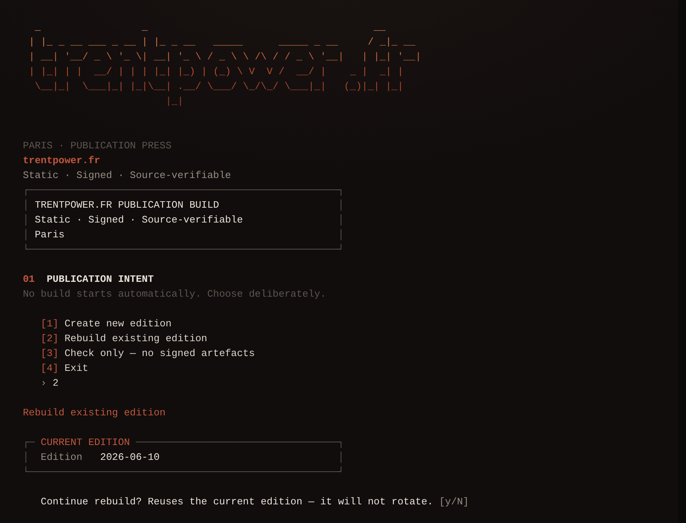

00The complete documentation
A signed, static, source‑verifiable publication, explained end to end.
One reading of the whole system: what it is, how words become pages, how it is built, gated, signed and checked, how it is operated, and how it is kept private and ready for public scrutiny. Written so a curious non‑technical reader and the engineer who maintains it can both follow it.
·Contents
Each part opens in plain English and deepens as it goes. A reader in a hurry can stop after any opening summary; the detail and code are there when they are wanted.
AOrientation
A companion to the website, by the same author. Every part is built to be entered from the top and left whenever you have read enough.
Every section follows one shape: a plain‑English summary, then a small picture of how the thing works, then the practical detail, and finally a single line on why it matters. A business reader can stop after the summary and lose nothing essential. A developer reads on for the names, paths and commands.
Diagrams read in grayscale; value and weight carry meaning, never colour alone. A single oxblood accent marks the one node that matters most. Code is shown only where it is genuinely illustrative, with light token colour.
Two readers at once. To a non‑technical reader it answers “what is this site, and why is it built so unusually?” To an engineer it is a map of the codebase from the first authored word through to the last signed byte on the live host. Where the two diverge, the summary serves the first and the detail serves the second.
BThe idea
A small, finished personal website published in English and French: a folder of plain files anyone can check for tampering, that collects nothing and depends on nothing.
Most websites run software on a server every time you visit. This one does not. It is a directory of pre‑made files (pages, images, fonts) served exactly as written. Each file is fingerprinted and the list of fingerprints is signed, so a stranger can confirm that what their browser received is what was published in the signed record. It is static, editorial, finite, and cryptographically signed.
The whole system on one axis: authored source at the base, signed public bytes at the top. Nothing runs at request time.
Two complete editions ship: /en‑au/ (English) and /fr/ (French, with localised slugs confidentialite, securite, integrite, verifier). The root / is a lightweight language gate carrying no editorial content of its own.
There is no runtime CMS, no database, no analytics, no cookies, no advertising identifiers, and no third‑party runtime assets: fonts are self‑hosted woff2 and every asset is same‑origin. The browser storage that is used stays on the device: a short, fixed set of same‑origin keys holding visitor preferences and first‑visit markers, plus the service‑worker offline cache. The storage itself is never sent anywhere, and all of it is listed and clearable on /local/. JavaScript is enhancement only (language switch, scroll reveal, project modal, citation overlay, service‑worker registration); the page means the same with scripts disabled.
The build is deterministic on the author’s machine: two consecutive local runs produce byte‑identical output, modulo the rotating PGP signature salt. Independent off‑machine reproduction is the stated next step, not yet a claim. No language model, AI service, or external API sits anywhere in the release path. And public/ is intentionally tracked in git: the deployed bytes are what the signed manifest attests to.
Measured at the network layer on page load. Source · the site’s own CSP and privacy posture, as of edition 2026‑06‑13.
Why this matters
A directory of static files has almost nothing to attack and almost nothing to maintain: no server code runs, no database can be queried, and every file a visitor receives is listed in the signed integrity.json manifest.
CThe content model
All the site’s words live in structured text, kept apart from the HTML. Writers edit prose in one place; the build sweeps it into every page, footer and citation.
English is the authored record. French is curated by hand, because translation is editorial work. A phrase that appears in many places has exactly one source; change it once and it changes everywhere, in both languages, with no manual synchronisation.
Copy lives as YAML under content/: en/shared.yml plus en/pages/*.yml (home, privacy, integrity, source, verify, security, system, local) and the fr/ equivalents. The route registry content/routes.json is generated from content/shared/routes.yml: 20 routes, one per logical page in each language, each carrying its path, locale, template, schema and trust flags.
The reference engine is deliberately dumb: one dotted path resolves to one shared string, with no conditionals and no loops. An unresolved {{ }} or a reference to a missing key is a build error; a long string repeated more than three times outside shared.yml is a warning.
# authored once, swept into every surface that quotes it proof_line: "Every byte is hashed, signed, and checkable." # referenced from any page, in either language: tagline: "{{ shared.site.proof_line }}"
Public JavaScript is generated from templates/*.template.js; never edit the generated *.js. The same single‑source discipline governs identity: edition date, name and sameAs links all flow from tools/config/identity_canonical.json.
Why this matters
One source per phrase means the two editions never drift, and a writer never hunts through HTML to fix a sentence.
DThe build pipeline
A single command turns authored source into the finished, signed website. The order is fixed because some stages rewrite the HTML, and the fingerprints must be taken last, over the final bytes.
You run one command. It renders both editions, sweeps in the edition date and asset versions, mirrors the source, takes the cryptographic hashes, signs them, packages a frozen archive of the edition, and finally runs the safety gate that decides whether the result may ship.
Stages generate_site and generate_sri mutate the HTML; the final hash must run after them, or the browser blocks a stale‑SRI script and Verify breaks.
The entry point is bash tools/build/build.sh. Two everyday invocations are the operator’s whole mental model:
$ bash tools/build/build.sh # full: generate, sign, archive, gate $ bash tools/build/build.sh --check # generators + gate only; no signing
Build and deploy are deliberately asymmetric: the local build signs; CI does not and never holds the PGP key. The runner only re‑verifies the committed signature and uploads bytes. Deploy is a non‑deleting two‑pass SFTP mirror, so an accidental git rm cannot wipe live files. The CI deploy fires on manual dispatch only, with an explicit confirm=DEPLOY, so a fork’s pull request can never trigger it. A post‑deploy smoke test probes the expected‑200 routes, the expected‑403/404 denials, and re‑verifies the live signature.
·What the public folder is made of
Of 624 published files, most are not “pages” at all. They are the verification scaffolding that makes the site checkable.
Tracked files under public/. 359 of them belong to frozen release archives. Source · git ls-files public/, edition 2026‑06‑13.
Why this matters
The fixed stage order is what lets two runs of the same source produce the same hashes. Hash before the HTML is rewritten and the manifest describes bytes the browser never receives.
EGates, checks & quality
Before anything is published, the build runs a battery of automated checks. The serious ones block the deploy outright. A second tier of polish checks reports problems but never blocks an urgent fix.
Is it signed? Does every file match its hash? Did any secret or local path leak? Those questions block a deploy if answered wrongly. Softer questions (search‑engine hints, comment style, editorial copy) only warn, so a polish nit can never hold a security fix hostage.
A single registry drives both runners. Every check carries a tier, a category, and a one‑line rationale, in gate order.
By category. Source · tools/lib/checks.py registry, edition 2026‑06‑13.
| Check | Cat | Tier | Proves |
|---|---|---|---|
| gpg | SEC | block | signature verifies against the published key in a clean keyring |
| source_mirrors | SEC | block | every /source/ mirror byte‑matches its live file |
| frozen_archives_immutable | SEC | block | sealed releases byte‑identical to baseline |
| local_path_leakage | SEC | block | no /home/, Desktop/ or htdocs path in any shipped byte |
| bilingual_html / lang_gate | COR | block | both editions and the gate render correctly |
| lighthouse_invariants | QUAL | advise | accessibility / SEO budgets hold |
A representative slice. Inline cross‑cutting checks are functions in tools/quality/inline_checks.py; the registry in tools/lib/checks.py feeds both tiers.
Three more gates run in continuous integration, beside the registry rather than inside it. A full‑history secret scan walks every commit for keys and local paths. A dependency scan (osv-scanner) checks the build toolchain against the OSV database and fails closed; a finding that cannot affect a static site with no runtime is recorded, with its reason, in a machine‑readable VEX at security/openvex.json, so nothing is ever suppressed silently. A licensing check (reuse lint) proves every tracked file resolves to a licence and copyright. All three fail the pull request, not merely warn.
Why this matters
Splitting the checks by severity means a missing signature or a leaked path stops the deploy, while a comment‑style nit cannot. The two failure modes never trade places under pressure.
FTrust & verification
Every public byte is fingerprinted; the list of fingerprints is signed with a key only the author holds. Anyone can confirm the site they received is exactly what was signed, without trusting the host or the network.
Re‑download the live site and check it against the signed manifest using standard tools. Either it matches and gpg prints “Good signature”, or it does not and you should not trust the bytes. Past editions are frozen, so the historical record cannot be quietly rewritten.
integrity.json maps every publishable path to a sha256‑… digest; integrity.json.sig is a detached PGP signature over it. The public key sits at /.well-known/pgp-key.asc, fingerprint A729 591B 450D 3F59 3694 98BD 8299 1F25 04AE 0263. The whole check, made executable:
tmpdir="$(mktemp -d)"; export GNUPGHOME="$tmpdir" ts=$(date +%s) curl -fsS "https://trentpower.fr/.well-known/pgp-key.asc?ts=$ts" | gpg --import curl -fsS "https://trentpower.fr/integrity.json?ts=$ts" -o integrity.json curl -fsS "https://trentpower.fr/integrity.json.sig?ts=$ts" -o integrity.json.sig gpg --verify integrity.json.sig integrity.json unset GNUPGHOME; rm -rf "$tmpdir" integrity.json integrity.json.sig
Beyond the manifest: /source/ holds byte‑equal text mirrors of every served file, so the bytes you read are the bytes that were signed. Frozen archives at /integrity/releases/<date>/ carry signed SHA256SUMS, a release.json trust anchor, a dependency‑free verify.sh, a builds.json index that records the canonical build and any same‑edition rebuilds, and an EXCLUDED_FILES.json that names every file deliberately left out of the archive (and why) so a verifier can tell intentional omission from tampering. Sealed editions are immutable; any later drift is recorded as a parallel rebuild, never a mutation.
What it proves
The bytes you received match a manifest signed by the held key. A stranger can re‑run the check and get the same answer.
What it does not prove
Key identity: that the key is whose you think. Verify the fingerprint out of band.
Content truth: integrity only, never that a statement on the page is correct.
Freshness: an old‑but‑validly‑signed release still verifies; the ?ts= cache‑bust fetches the current one.
Host & key safety: no defence against host or signing‑key compromise.
Your device: not a compromised client, extension, or stale browser cache.
GSecurity & privacy
The site collects nothing and loads nothing from anyone else, and the Content Security Policy tells the browser to enforce exactly that. Only an explicit allow‑list of files is ever served; everything else is denied by default.
“We don’t track you” is easy to say. Here the Content Security Policy tells the browser to block third‑party connections and outbound requests, and the server serves only a named list of files; what little the site stores stays on your device, same‑origin and visitor‑controlled. On browsers that honour the policy, the claim is checkable rather than taken on faith.
The Content‑Security‑Policy is locked to default-src 'none' with connect-src 'self' on normal pages, so a page can talk only to its own origin and a fetch to any third party is not even possible. Scripts are 'self' plus a small fixed set of sha256 hashes; there is no unsafe-inline, no eval(), and no inline event handlers. Where the browser supports it, Trusted Types are required for any script sink (older browsers ignore the directive and fall back to the other script-src controls).
Content-Security-Policy: default-src 'none'; upgrade-insecure-requests; script-src 'self' <4 sha256 hashes>; script-src-attr 'none'; style-src 'self'; font-src 'self'; img-src 'self'; connect-src 'self'; worker-src 'self'; manifest-src 'self'; frame-ancestors 'none'; object-src 'none'; base-uri 'self'; form-action 'none'; require-trusted-types-for 'script'; trusted-types tp-app
Cross‑origin isolation is retained (COOP same-origin, COEP require-corp), with HSTS at one year. Exposure is allow‑listed rather than deny‑listed: tools/config/public-exposure.json (kept under tools/, never deployed) is generated and then validated, and public/.htaccess runs a rewrite gate that ends in RewriteRule . - [F,L], so anything not explicitly allowed is forbidden. The validator proves every reachable file is allowed, no file matches a deny rule, and every internal link resolves.
What the site stores stays on the device. A short, fixed set of same‑origin keys holds visitor choices (appearance via tp-theme, last edition and reading position, first‑visit markers), and the service worker keeps an offline cache named tp-{edition}.{hashes}, so a page read once works without the network. There are no cookies and no advertising identifiers; the storage itself is never sent anywhere, and /local/ lists every key the visitor can inspect and clear.
Accessibility is part of the same posture: the site targets WCAG 2.2 AA. Each edition’s signed /tests/ snapshot records an automated accessibility check, and keyboard navigation, landmarks and focus order are verified by hand; known exceptions are stated on /security/ rather than implied.
Why this matters
Most privacy claims rest on a host's word. Here a visitor can read the response headers and the .htaccess gate and confirm the rules for themselves: connect-src 'self' means the page cannot reach a tracker even if one were added by mistake.
HOperations & recovery
Running the site is a small, repeatable routine. Recovery from a stale cache, a bad signature, or a suspected compromise has a written procedure for each case.
Set one canonical date, rebuild so it propagates everywhere, gate, sign, deploy, then test the live site. Because the system is small, most problems are “restore the known‑good copy and re‑sign”, not improvisation under pressure.
Filenames stay stable (styles.css, sw-register.js); the version rides in a query string instead, styles.css?v=2026-06-13.4e425527, where the value is the build's asset_version (the edition date plus a content hash). A changed build rotates that hash, so the browser fetches fresh bytes rather than a stale cached copy. The service‑worker cache name encodes the same edition and content hashes, tp-{edition}.{bundle_hash}-{precache_hash}-{release_tag}, so any changed file rotates a hash and the old cache is purged on activate.
The critical operator rule
Never sign while GNUPGHOME points at the temporary verification keyring. If a signature fails for no clear reason: unset GNUPGHOME and restart the gpg agent, then sign again.
Incident response begins by freezing: reproduce from a private window, another device, and a mobile network before touching anything, since most “incidents” are a cache blip or a browser extension, not a compromise. If integrity genuinely fails, lock the host account, restore from the known‑good local copy, regenerate, re‑sign, and purge the cache. A temporary stale page or a Lighthouse wobble is explicitly not an incident.

IThe score ledger
One local‑only tool sits beside the site but never touches what ships: it audits the live site after deploy, as evidence rather than as a gate.
The score ledger watches the live site over time and records how it is doing, but nothing in the build ever asks its opinion. It shares one machine‑readable report envelope with the gate and the lint, so every run of every tool reads the same way.
The score ledger is observational: it tests the live site over HTTPS, so you deploy and let it propagate first, then run it from the workstation to a local SQLite and reports. It stores atomic facts (run, target, tool result, metric, observation, evidence) and emits no single overall score. Lighthouse performance on a small machine is noise; the ledger trusts the rolling median of the last five runs, not any single number.
{ "schema_version": 1, "command": "gate", "status": "passed",
"summary": { "passed": 35, "failed": 0, "warnings": 0 } }
JPublic & authorship
The repository has been public since the first signed edition. What keeps it safe is not a one‑time sweep but a standing discipline: no key, secret or local path is ever committed, and how the site is authored is stated plainly in the open.
The source is public, so every private thing must stay absent: keys, passwords, server paths. The repository also says plainly how it is made: written and reviewed by a human, with selective AI help for drafting only, and never auto‑published. That is recorded once in public files, not stamped on every commit, and re‑checked on every change rather than waved through once.
Everything private is .gitignore‑covered: SSH keys, exported private .asc keys, TOTP secrets, service‑account JSON, the private/ tree, local credentials and databases. The published key at /.well-known/pgp-key.asc is intentionally public; a private exported key must never enter history. The deploy gate already enforces the public‑bytes subset, and the readiness pass covers the wider repository the gate does not scan.
Authorship is stated once, canonically, and made machine‑readable:
"automated_publishing": false, "manual_review_before_publication": true, "language_model_assistance": "selective drafting or structuring only"
A build‑time check (tools/quality/validate_git_metadata.py) scans the tracked tree for forbidden commit trailers (Co‑authored‑by, Generated‑by) and fails the build on any regression, so the commit log stays an editorial record, not a tool‑attribution diary.
KProvenance & releases
The author’s signature proves who published a record. A second, independent proof now rides alongside it: each release is rebuilt on a public machine and carries a tamper‑evident record of exactly which commit and which workflow produced it.
The PGP signature says “the author published this.” The new proof says “a clean build machine, which no one edits by hand, rebuilt this release from the tagged source, and here is the exact commit and workflow that did it.” That statement is written to a public, append‑only transparency log, so anyone can check it and no one, the author included, can forge it after the fact. The two proofs are complementary: identity from the key, build history from the platform.
Pushing a signed edition/YYYY‑MM‑DD tag triggers a release workflow on a GitHub‑hosted runner. It re‑renders the site from the tagged source (a reproducibility proof that fails closed if the committed bytes do not rebuild), packages a deterministic archive, and asks the platform to attest it. The attestation is signed keyless through GitHub’s OpenID Connect identity and Sigstore, and recorded in the public Rekor transparency log. This is SLSA build‑track Level 3: the build runs on a hosted service and the provenance cannot be falsified by the build steps themselves. The canonical record stays locally built and PGP‑signed; the signing key never enters the runner.
$ gh attestation verify trentpower-fr-2026-06-13-site.tar.gz # commit + workflow --repo trentpower/trentpower.fr
Each release also ships a CycloneDX SBOM. The site itself has no runtime dependencies, so the bill of materials records the build toolchain rather than anything shipped to a visitor. Archives are byte‑deterministic (sorted entries, pinned timestamps, no host metadata); rebuilding from the same source yields identical bytes, with the deliberate exceptions of the random signature salt and the licensed fonts. The full reproducibility story is in docs/REPRODUCIBILITY.md.
Independently checkable standards. The same posture is measured by outside parties, not just asserted here: the OpenSSF Best Practices badge (passing, at the silver tier) and the OpenSSF Baseline criteria; REUSE 3.3 compliance, so every tracked file resolves to a licence and copyright by machine; and the OpenSSF Scorecard, treated as a maintenance dashboard rather than a medal, and capped by design for a single‑maintainer project that cannot require a second reviewer.
Why this matters
A signature alone asks you to trust one machine. Provenance built on a public runner and logged to Rekor lets a stranger confirm where a release came from without trusting the author’s laptop, the host, or even GitHub’s word after the fact.
LAppendix
The whole repository at a glance, authored source through to signed public bytes, and the order in which its principles win when they conflict.
trentpower.fr/ ├─ content/ authored copy (YAML) + route registry │ ├─ shared/routes.yml en/ fr/ ├─ templates/ *.template.js → generated JS ├─ styles/ authored design source CSS (*.src.css) ├─ tools/ the pipeline, one dir per responsibility │ ├─ build/ creates the site (build.sh, generators, copy/) │ ├─ quality/ stops a bad release (gate.py, lint.py, validate_*) │ ├─ verify/ proves the release is genuine (read‑only) │ ├─ release/ makes it public (archives, seal, deploy.sh) │ ├─ config/ declared facts (identity, public‑exposure) │ ├─ lib/ shared across pillars (paths.py, checks.py) │ ├─ score-ledger/ local live‑site audit │ └─ _retired/ superseded one‑offs ├─ public/ SIGNED, DEPLOYED bytes; the web root │ ├─ en-au/ fr/ index.html editions + language gate │ ├─ integrity.json (+ .sig) │ ├─ .well-known/pgp-key.asc │ ├─ source/ byte‑equal mirrors │ └─ integrity/releases/<date>/ frozen archives ├─ docs/ this documentation set └─ README.md README.pdf
Every choice in this repository answers to a fixed ordering of principles. When two of them pull in different directions, the one earlier in the list wins:
1 Privacy → 2 Security → 3 Verifiability → 4 Accessibility → 5 Minimal surface → 6 Determinism → 7 Human‑readable → 8 Finite
A companion note, docs/htaccess-future-bilingual.md, holds the rewrite rules for a future routing change, kept out of the live .htaccess on purpose, because the production file should describe what is live, not what may ship later.
·Colophon
·Type
Set in Klim Type Foundry’s Signifier (serif, the reading and display voice, Light 300 throughout), Söhne (sans, captions and support only), and Söhne Mono (paths, hashes, labels, numerals): the same families the live site serves. If the families cannot be embedded, substitute Source Serif · Inter · JetBrains Mono, which keeps roughly seventy per cent of the voice.
·Colour
Warm paper, iron ink, a single oxblood accent. No semantic colour layer; state is carried by type, rules and language. Code tokens are the only place jewel‑tone pigment appears, and every diagram reads in grayscale.
·How this was made
Composed in a single authored HTML document (docs/pdf/readme.html) using the project’s print style system, paginated to A4 with paged.js, and exported through headless Chromium. The HTML is the source of truth; this PDF is its export. When the system changes, the HTML is updated and the PDF re‑exported, never hand‑patched. After every export the rendered pages are checked for clipped text, overlapping blocks, missing assets and chart proportions before the document ships.
Provenance
Edition 2026‑06‑13 · A4 portrait · composed in Paris. Charts and figures are generated from repository data (tools/lib/checks.py, git ls-files public/) and validated against it at export time, not asserted. The operator‑console capture is a tracked documentation asset, taken from the live build ceremony and set in the publication's own mono face.
trentpower.fr · Private · Static · Signed